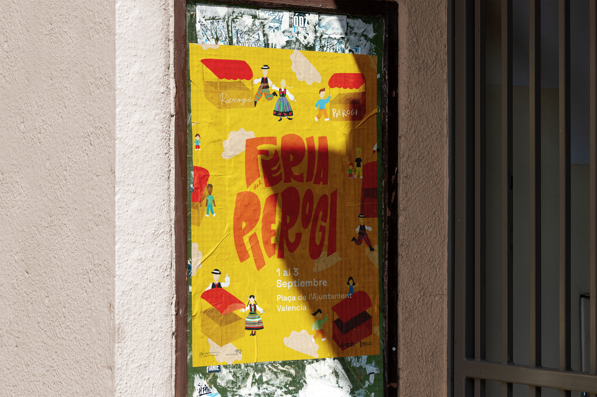
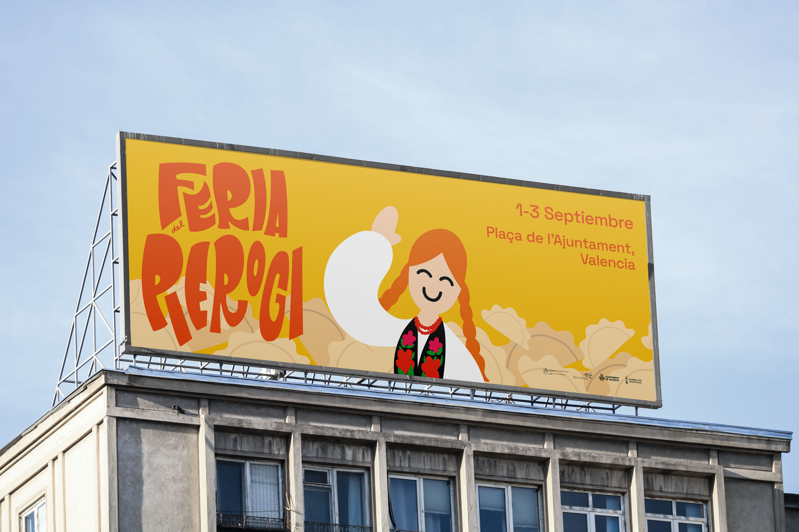
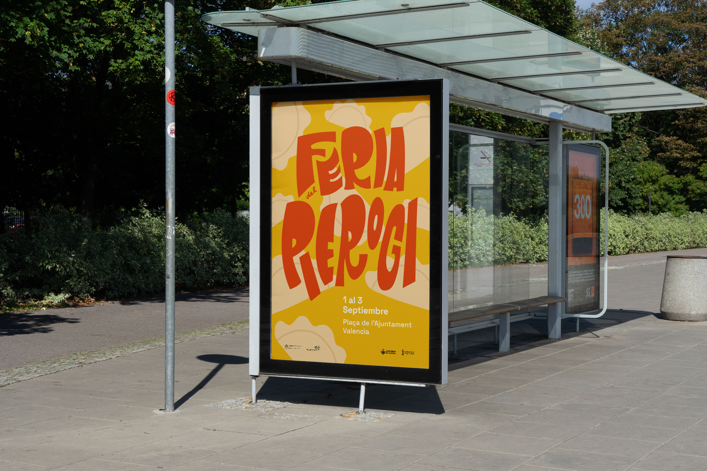
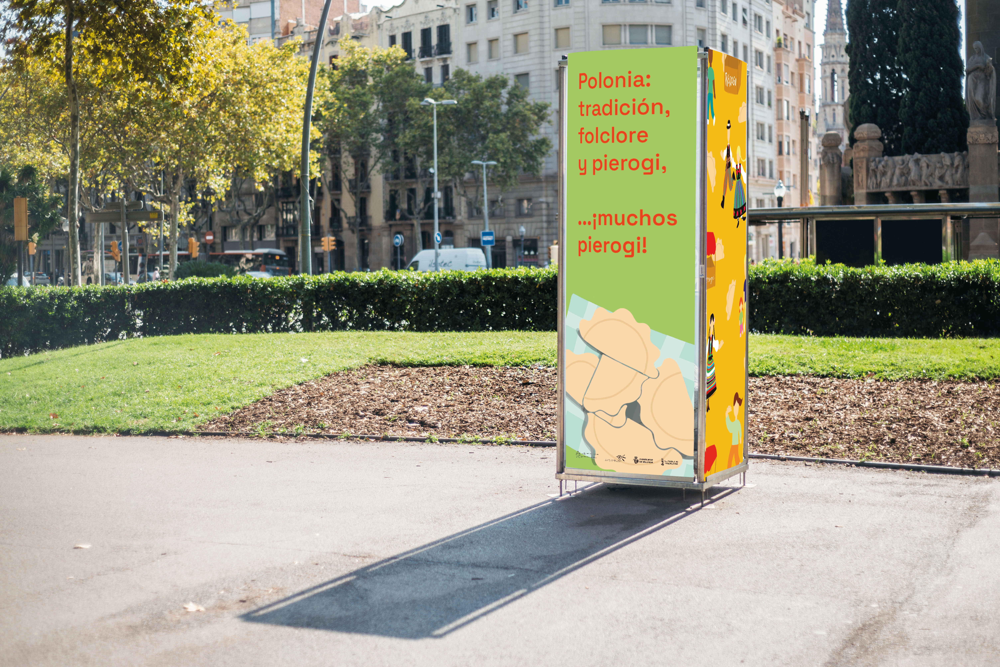

"Feria del Pierogi" is a gastronomic event that revolves around Poland's most typical dish, the pierogi, a joyful occasion to enjoy this delicacy and get to know new cultures. Designing a dynamic typography and using fun and synthetic illustrations we represent the familiar and cheerful atmosphere of the festival.



